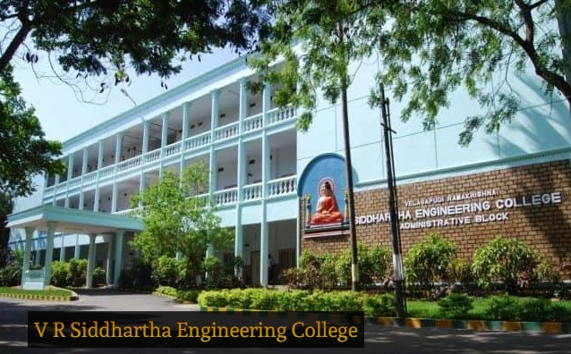
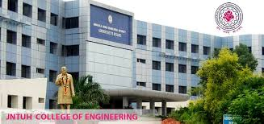

Education |
|---|
|
The general pathway to becoming a Civil Engineer starts with a 4 year bachelors program.I am very greatful to say that I have done my B.tech in one of prestigous college in AP and first private institution to offer undergraduate education in engineering in Andhra Pradesh, India and First government college to offer PG Programmes in engineering in Andhra Pradesh in the year 1977, V R Siddhartha Engineering College. After obtaining a bachelors degree, students have the option to continue their Education. I chose to learn programming in prestigous institution MSIT-JNTUH. |
| Institution | Academic Percentage | Year | |
|---|---|---|---|
| Class Xth | Sri Saraswathi Vidyalaya | 9.8/10 | 2014 |
| Intermediate | Narayana Junior College | 95.4% | 2016 |
| B.tech (Civil Engineering) | V R Siddhartha Engineering College | 83% | 2016-2020 |
| MSIT | MSIT-JNTUH | Pursuing | 2020-2022 |

